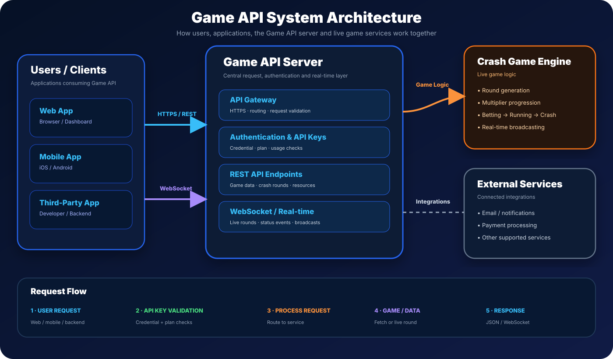
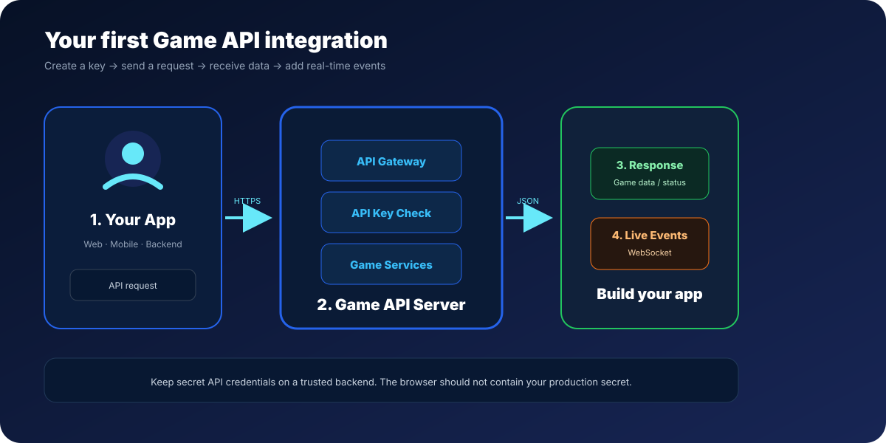

GET
/
Returns basic service information, current service status, version and the realtime path.
Public service informationConnect your web app, mobile app or backend to Game API using HTTPS REST endpoints and the realtime WebSocket service. This page gives developers the public endpoint map, request formats, response examples and connection flow.

The production API host is api.game-api.online. REST requests use HTTPS. Realtime events use the WebSocket endpoint below.

REST endpoints are suitable when your application needs a request/response operation, such as fetching recent game rounds.
The Crash Game rounds endpoint returns recent round records. The server controls the live round lifecycle; clients consume the published state.
POST https://api.game-api.online/api/v1/crash/rounds
Authorization: Bearer YOUR_GAME_API_KEY
Content-Type: application/json
{
"limit": 20
}
{
"success": true,
"game": "crash",
"data": [
{
"id": "round-id",
"round_number": 125,
"status": "crash",
"multiplier": "3.47",
"started_at": "2026-09-24T08:00:00.000Z",
"crashed_at": "2026-09-24T08:00:07.000Z"
}
],
"count": 1,
"plan": "free"
}
Use the production WebSocket URL to receive live Crash Game events without repeatedly polling the REST endpoint.
wss://api.game-api.online/realtime.connected message.crash_rounds.auth message with your API key.crash_status updates as the server moves through betting, running and crash states.const socket = new WebSocket("wss://api.game-api.online/realtime");
socket.onopen = () => {
socket.send(JSON.stringify({
type: "auth",
apiKey: "YOUR_GAME_API_KEY"
}));
};
socket.onmessage = (event) => {
const message = JSON.parse(event.data);
console.log("Game API:", message);
};
{
"type": "crash_status",
"status": "running",
"round_number": 125,
"multiplier": "3.47",
"started_at": "2026-09-24T08:00:00.000Z"
}
Game API uses API keys for protected game endpoints. Keep production secrets on a trusted backend and never expose a secret key in public client-side source code.
Authorization: Bearer YOUR_GAME_API_KEY
Use the API key issued for your Game API account when calling protected game endpoints.
{ "type": "auth", "apiKey": "YOUR_GAME_API_KEY" }Authenticate a WebSocket connection after it opens when authentication is required by the environment.
const response = await fetch(
"https://api.game-api.online/api/v1/crash/rounds",
{
method: "POST",
headers: {
"Content-Type": "application/json",
"Authorization": "Bearer YOUR_GAME_API_KEY"
},
body: JSON.stringify({ limit: 20 })
}
);
const result = await response.json();
console.log(result);curl -X POST "https://api.game-api.online/api/v1/crash/rounds" -H "Authorization: Bearer YOUR_GAME_API_KEY" -H "Content-Type: application/json" -d '{"limit":20}'| Situation | What to check |
|---|---|
| Invalid API key | Confirm the key is active, has not been revoked or expired, and is being sent in the expected authentication field. |
| 401 / unauthorized | Check the Authorization header and make sure the token belongs to the intended Game API account. |
| WebSocket auth_error | Check the API key and send the auth message only after the WebSocket connection opens. |
| Empty round data | Check the selected game, account plan and whether round records are currently available. |
| CORS in a browser | For production secret keys, use a backend proxy rather than exposing credentials directly to the browser. |
✓ Store secrets server-side
✓ Use HTTPS/WSS
✓ Handle reconnects
✓ Validate JSON responses
✓ Add request timeouts
✓ Monitor API usage
✓ Listen for connected
✓ Handle auth_error
✓ Handle disconnects
✓ Reconnect safely
✓ Process crash_status events
✓ Do not attempt to control server-owned rounds